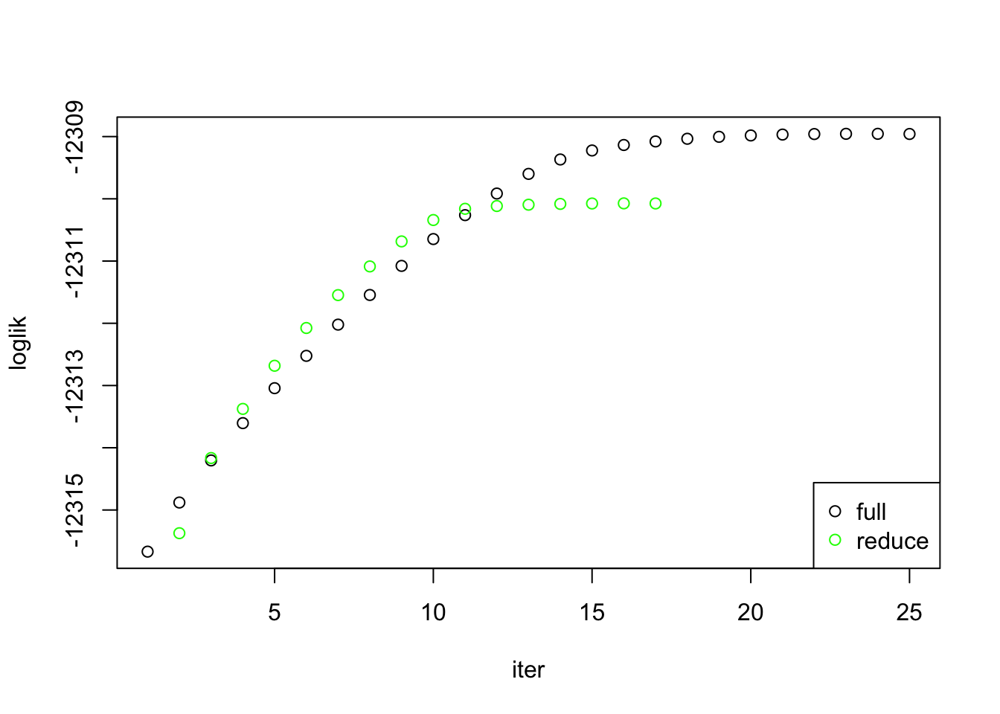
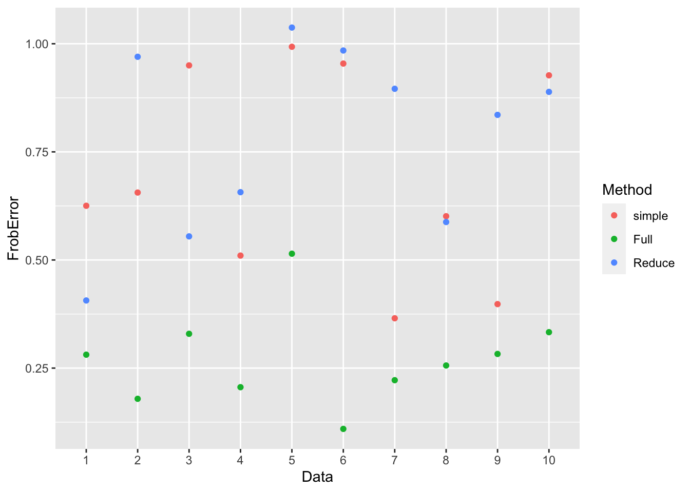
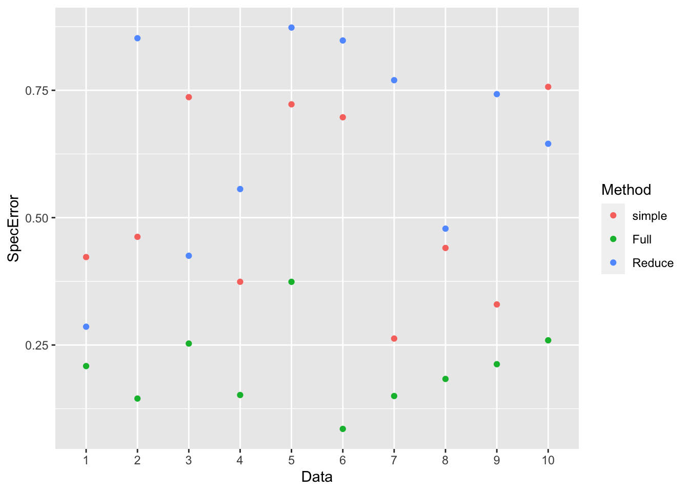
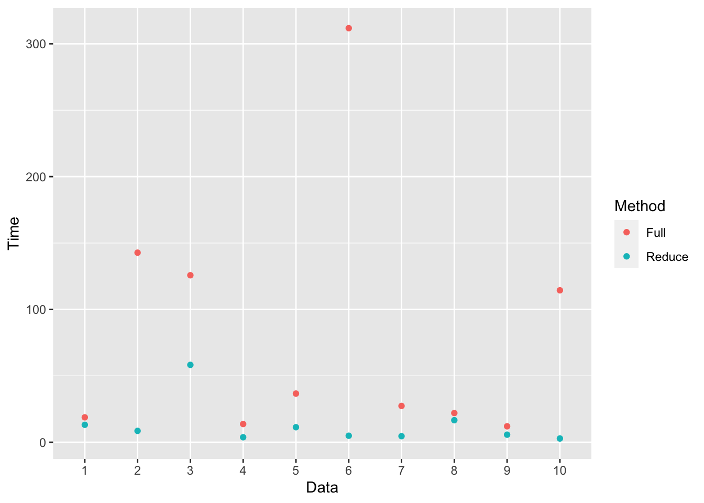
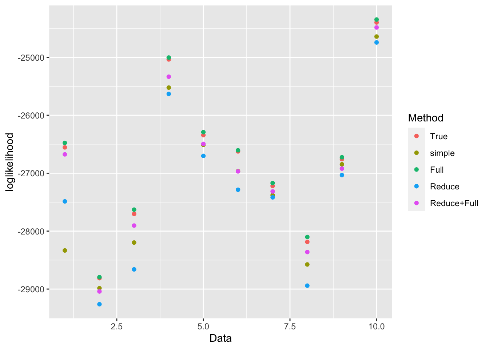
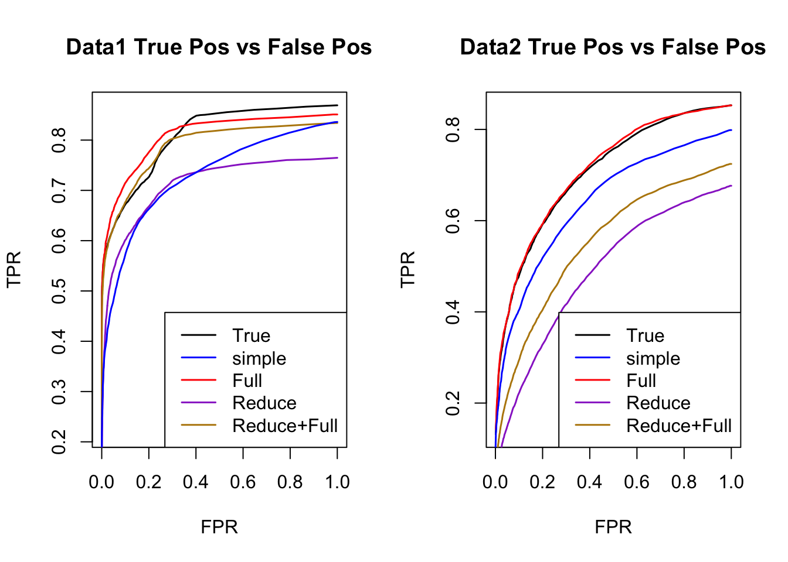
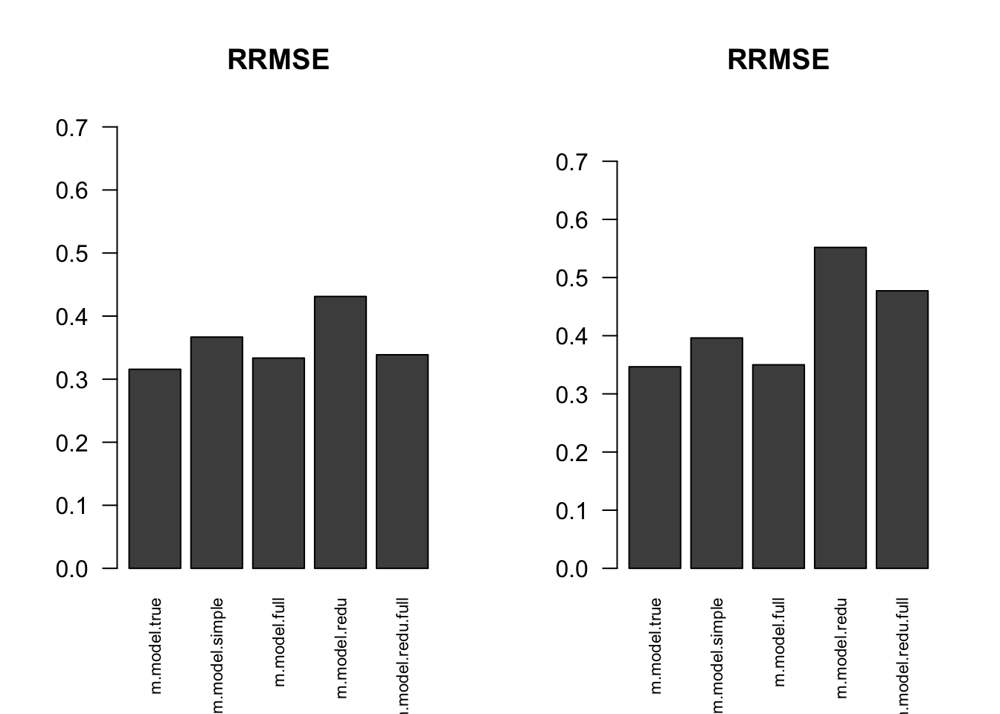

Last updated: 2018-10-22
workflowr checks: (Click a bullet for more information) ✔ R Markdown file: up-to-date
Great! Since the R Markdown file has been committed to the Git repository, you know the exact version of the code that produced these results.
✔ Environment: empty
Great job! The global environment was empty. Objects defined in the global environment can affect the analysis in your R Markdown file in unknown ways. For reproduciblity it’s best to always run the code in an empty environment.
✔ Seed:
set.seed(1)
The command set.seed(1) was run prior to running the code in the R Markdown file. Setting a seed ensures that any results that rely on randomness, e.g. subsampling or permutations, are reproducible.
✔ Session information: recorded
Great job! Recording the operating system, R version, and package versions is critical for reproducibility.
✔ Repository version: 5135fa7
wflow_publish or wflow_git_commit). workflowr only checks the R Markdown file, but you know if there are other scripts or data files that it depends on. Below is the status of the Git repository when the results were generated:
Ignored files:
Ignored: .DS_Store
Ignored: .Rhistory
Ignored: .Rproj.user/
Ignored: analysis/.DS_Store
Ignored: analysis/.Rhistory
Ignored: analysis/include/.DS_Store
Ignored: code/.DS_Store
Ignored: data/.DS_Store
Ignored: docs/.DS_Store
Ignored: output/.DS_Store
Untracked files:
Untracked: analysis/Classify.Rmd
Untracked: analysis/EstimateCorEM3W2.Rmd
Untracked: analysis/EstimateCorMaxEMGD.Rmd
Untracked: analysis/EstimateCorMaxGD.Rmd
Untracked: analysis/EstimateCorPrior.Rmd
Untracked: analysis/EstimateCorSol.Rmd
Untracked: analysis/HierarchicalFlashSim.Rmd
Untracked: analysis/MashLowSignalGTEx4.Rmd
Untracked: analysis/Mash_GTEx.Rmd
Untracked: analysis/MeanAsh.Rmd
Untracked: analysis/OutlierDetection.Rmd
Untracked: analysis/OutlierDetection2.Rmd
Untracked: analysis/OutlierDetection3.Rmd
Untracked: analysis/OutlierDetection4.Rmd
Untracked: analysis/mash_missing_row.Rmd
Untracked: code/GTExNullModel.R
Untracked: code/MashClassify.R
Untracked: code/MashCorResult.R
Untracked: code/MashCormVResult.R
Untracked: code/MashNULLCorResult.R
Untracked: code/MashSource.R
Untracked: code/Weight_plot.R
Untracked: code/addemV.R
Untracked: code/estimate_cor.R
Untracked: code/generateDataV.R
Untracked: code/johnprocess.R
Untracked: code/mV.R
Untracked: code/sim_mean_sig.R
Untracked: code/summary.R
Untracked: data/Blischak_et_al_2015/
Untracked: data/scale_data.rds
Untracked: docs/figure/Classify.Rmd/
Untracked: docs/figure/OutlierDetection.Rmd/
Untracked: docs/figure/OutlierDetection2.Rmd/
Untracked: docs/figure/OutlierDetection3.Rmd/
Untracked: docs/figure/Test.Rmd/
Untracked: docs/figure/mash_missing_whole_row_5.Rmd/
Untracked: docs/include/
Untracked: output/AddEMV/
Untracked: output/CovED_UKBio_strong.rds
Untracked: output/CovED_UKBio_strong_Z.rds
Untracked: output/Flash_UKBio_strong.rds
Untracked: output/GTExNULLres/
Untracked: output/GTEx_2.5_nullData.rds
Untracked: output/GTEx_2.5_nullModel.rds
Untracked: output/GTEx_2.5_nullPermData.rds
Untracked: output/GTEx_2.5_nullPermModel.rds
Untracked: output/GTEx_3.5_nullData.rds
Untracked: output/GTEx_3.5_nullModel.rds
Untracked: output/GTEx_3.5_nullPermData.rds
Untracked: output/GTEx_3.5_nullPermModel.rds
Untracked: output/GTEx_3_nullData.rds
Untracked: output/GTEx_3_nullModel.rds
Untracked: output/GTEx_3_nullPermData.rds
Untracked: output/GTEx_3_nullPermModel.rds
Untracked: output/GTEx_4.5_nullData.rds
Untracked: output/GTEx_4.5_nullModel.rds
Untracked: output/GTEx_4.5_nullPermData.rds
Untracked: output/GTEx_4.5_nullPermModel.rds
Untracked: output/GTEx_4_nullData.rds
Untracked: output/GTEx_4_nullModel.rds
Untracked: output/GTEx_4_nullPermData.rds
Untracked: output/GTEx_4_nullPermModel.rds
Untracked: output/MASH.10.em2.result.rds
Untracked: output/MASH.10.mle.result.rds
Untracked: output/MashCorSim--midway/
Untracked: output/Mash_EE_Cov_0_plusR1.rds
Untracked: output/UKBio_mash_model.rds
Untracked: output/mVIterations/
Untracked: output/mVUlist/
Untracked: output/result.em.rds
Unstaged changes:
Modified: analysis/EstimateCorMaxEM2.Rmd
Modified: analysis/EstimateCorMaxMV.Rmd
Modified: analysis/Mash_UKBio.Rmd
Modified: analysis/mash_missing_samplesize.Rmd
Modified: output/Flash_T2_0.rds
Modified: output/Flash_T2_0_mclust.rds
Modified: output/Mash_model_0_plusR1.rds
Modified: output/PresiAddVarCol.rds
| File | Version | Author | Date | Message |
|---|---|---|---|---|
| Rmd | 5135fa7 | zouyuxin | 2018-10-22 | wflow_publish(“analysis/EstimateCorMaxMVUlist.Rmd”) |
| html | c25e8c7 | zouyuxin | 2018-10-22 | Build site. |
| Rmd | 0ecda8f | zouyuxin | 2018-10-22 | wflow_publish(“analysis/EstimateCorMaxMVUlist.Rmd”) |
| html | eb57faf | zouyuxin | 2018-10-22 | Build site. |
| Rmd | e061081 | zouyuxin | 2018-10-22 | wflow_publish(“analysis/EstimateCorMaxMVUlist.Rmd”) |
library(mashr)Loading required package: ashrlibrary(ggplot2)
source('../code/generateDataV.R')penalty <- function(prior, pi_s){
subset <- (prior != 1.0)
sum((prior-1)[subset]*log(pi_s[subset]))
}
mixture.MV <- function(mash.data, Ulist, init_V=diag(ncol(mash.data$Bhat)), max_iter = 500, tol=1e-5, prior = c('nullbiased', 'uniform'), cor = TRUE, track_fit = FALSE){
prior <- match.arg(prior)
tracking = list()
m.model = fit_mash_V(mash.data, Ulist, V = init_V, prior=prior)
pi_s = get_estimated_pi(m.model, dimension = 'all')
prior.v <- mashr:::set_prior(length(pi_s), prior)
# compute loglikelihood
log_liks <- numeric(max_iter+1)
log_liks[1] <- get_loglik(m.model)+penalty(prior.v, pi_s)
V = init_V
result = list(V = V, logliks = log_liks[1], mash.model = m.model)
for(i in 1:max_iter){
if(track_fit){
tracking[[i]] = result
}
# max_V
V = E_V(mash.data, m.model)
if(cor){
V = cov2cor(V)
}
m.model = fit_mash_V(mash.data, Ulist, V, prior=prior)
pi_s = get_estimated_pi(m.model, dimension = 'all')
log_liks[i+1] <- get_loglik(m.model)+penalty(prior.v, pi_s)
result = list(V = V, logliks = log_liks[1:(i+1)], mash.model = m.model)
# Update delta
delta.ll <- log_liks[i+1] - log_liks[i]
if(delta.ll<=tol) break;
}
if(track_fit){
result$trace = tracking
}
return(result)
}
E_V = function(mash.data, m.model){
n = mashr:::n_effects(mash.data)
Z = mash.data$Bhat/mash.data$Shat
post.m.shat = m.model$result$PosteriorMean / mash.data$Shat
post.sec.shat = plyr::laply(1:n, function(i) (t(m.model$result$PosteriorCov[,,i]/mash.data$Shat[i,])/mash.data$Shat[i,]) + tcrossprod(post.m.shat[i,])) # nx2x2 array
temp1 = crossprod(Z)
temp2 = crossprod(post.m.shat, Z) + crossprod(Z, post.m.shat)
temp3 = unname(plyr::aaply(post.sec.shat, c(2,3), sum))
(temp1 - temp2 + temp3)/n
}
fit_mash_V <- function(mash.data, Ulist, V, prior=c('nullbiased', 'uniform')){
m.data = mashr::mash_set_data(Bhat=mash.data$Bhat, Shat=mash.data$Shat, V = V, alpha = mash.data$alpha)
m.model = mashr::mash(m.data, Ulist, prior=prior, verbose = FALSE, outputlevel = 3)
return(m.model)
}Simple simulation in \(R^2\): \[ \hat{\beta}|\beta \sim N_{2}(\hat{\beta}; \beta, \left(\begin{matrix} 1 & 0.5 \\ 0.5 & 1 \end{matrix}\right)) \]
\[ \beta \sim \frac{1}{4}\delta_{0} + \frac{1}{4}N_{2}(0, \left(\begin{matrix} 1 & 0 \\ 0 & 0 \end{matrix}\right)) + \frac{1}{4}N_{2}(0, \left(\begin{matrix} 0 & 0 \\ 0 & 1 \end{matrix}\right)) + \frac{1}{4}N_{2}(0, \left(\begin{matrix} 1 & 1 \\ 1 & 1 \end{matrix}\right)) \]
set.seed(1)
n = 4000; p = 2
Sigma = matrix(c(1,0.5,0.5,1),p,p)
U0 = matrix(0,2,2)
U1 = U0; U1[1,1] = 1
U2 = U0; U2[2,2] = 1
U3 = matrix(1,2,2)
Utrue = list(U0=U0, U1=U1, U2=U2, U3=U3)
data = generate_data(n, p, Sigma, Utrue)m.data = mash_set_data(data$Bhat, data$Shat)
U.c.full = cov_canonical(m.data)
U.c.redu = cov_canonical(m.data, cov_methods = "simple_het")The reduced Ulist only contains simple_het.
result.mV.full <- mixture.MV(m.data, U.c.full, init_V = estimate_null_correlation(m.data, apply_lower_bound = FALSE))
result.mV.redu <- mixture.MV(m.data, U.c.redu, init_V = estimate_null_correlation(m.data, apply_lower_bound = FALSE)){
plot(result.mV.full$loglik, xlab = 'iter', ylab = 'loglik')
points(result.mV.redu$loglik, col='green')
legend('bottomright', legend=c('full', 'reduce'), col=c('black', 'green'), pch=c(1,1))
}
| Version | Author | Date |
|---|---|---|
| eb57faf | zouyuxin | 2018-10-22 |
The estimated V from full Ulist is
result.mV.full$V [,1] [,2]
[1,] 1.0000000 0.5095234
[2,] 0.5095234 1.0000000The estimated V from reduced Ulist is
result.mV.redu$V [,1] [,2]
[1,] 1.0000000 0.4822143
[2,] 0.4822143 1.0000000The mash model from the full Ulist has the log likelihood -12302.51.
The mash model from the reduced Ulist has the log likelihood -12304.54.
m.data = mash_set_data(data$Bhat, data$Shat, V = result.mV.redu$V)
m.model = mash(m.data, U.c.full, verbose = FALSE)Using the V from the reduced Ulist, the mash model using full Ulist has the log likelihood -12302.99.
I randomly generate 10 positive definite correlation matrices, V. The sample size is 4000.
\[ \hat{b}_{j}|b_{j} \sim N_{5}(z, S_{j}VS_{j}) \] \[ b_{j}\sim\frac{1}{4}\delta_{0} + \frac{1}{4}N_{5}(0,\left(\begin{matrix} 1 & \mathbf{0}_{1\times 4} \\ \mathbf{0}_{4\times 1} & \mathbf{0}_{4\times 4} \end{matrix}\right)) + \frac{1}{4}N_{5}(0,\left(\begin{matrix} \mathbf{1}_{2\times 2} & \mathbf{0}_{1\times 3} \\ \mathbf{0}_{3\times 1} & \mathbf{0}_{3\times 3} \end{matrix}\right)) + \frac{1}{4}N_{5}(0,\mathbf{1}_{5\times 5}) \]
set.seed(20181006)
n=4000; p = 5
U0 = matrix(0,p,p)
U1 = U0; U1[1,1] = 1
U2 = U0; U2[c(1:2), c(1:2)] = 1
U3 = matrix(1, p,p)
Utrue = list(U0 = U0, U1 = U1, U2 = U2, U3 = U3)
for(t in 1:10){
print(paste0('Data: ', t))
Vtrue = clusterGeneration::rcorrmatrix(p)
data = generate_data(n, p, Vtrue, Utrue)
# mash cov
m.data = mash_set_data(Bhat = data$Bhat, Shat = data$Shat)
m.1by1 = mash_1by1(m.data)
strong = get_significant_results(m.1by1)
U.pca = cov_pca(m.data, 3, subset = strong)
U.ed = cov_ed(m.data, U.pca, subset = strong)
U.c = cov_canonical(m.data)
print('Method: mV')
full.time = system.time(Vhat.mV.full <- mixture.MV(m.data, c(U.c, U.ed), init_V = estimate_null_correlation(m.data, apply_lower_bound = FALSE),
tol=1e-4, track_fit = FALSE))['elapsed']
reduce.time = system.time(Vhat.mV.redu <- mixture.MV(m.data, cov_canonical(m.data, cov_methods = c("identity", "singletons")),
init_V = estimate_null_correlation(m.data, apply_lower_bound = FALSE),
tol=1e-4, track_fit = FALSE))['elapsed']
saveRDS(list(V.true = Vtrue, V.mV.full = Vhat.mV.full, V.mV.redu = Vhat.mV.redu, data = data, strong=strong,
full.time = full.time, reduce.time = reduce.time),
paste0('../output/MASH.mV.result.',t,'.rds'))
}files = dir("../output/mVUlist/"); files = files[grep("MASH.mV.result",files)]
times = length(files)
result = vector(mode="list",length = times)
for(i in 1:times) {
result[[i]] = readRDS(paste("../output/mVUlist/", files[[i]], sep=""))
}for(i in 1:times){
m.data = mash_set_data(result[[i]]$data$Bhat, result[[i]]$data$Shat)
result[[i]]$V.trun = estimate_null_correlation(m.data, apply_lower_bound = FALSE)
m.1by1 = mash_1by1(m.data)
strong = get_significant_results(m.1by1)
U.c = cov_canonical(m.data)
U.pca = cov_pca(m.data, 3, subset = strong)
U.ed = cov_ed(m.data, U.pca, subset = strong)
m.data.true = mash_set_data(Bhat = m.data$Bhat, Shat = m.data$Shat, V = result[[i]]$V.true)
m.model.true = mash(m.data.true, c(U.c,U.ed), verbose = FALSE)
m.data.trun = mash_set_data(Bhat = m.data$Bhat, Shat = m.data$Shat, V = result[[i]]$V.trun)
m.model.trun = mash(m.data.trun, c(U.c,U.ed), verbose = FALSE)
# mV
# full
m.model.full = result[[i]]$V.mV.full$mash.model
# reduce
m.model.redu = result[[i]]$V.mV.redu$mash.model
m.data.redu = mash_set_data(Bhat = m.data$Bhat, Shat = m.data$Shat, V = result[[i]]$V.mV.redu$V)
m.model.redu.full = mash(m.data.redu, c(U.c,U.ed), verbose = FALSE)
result[[i]]$m.model = list(m.model.true = m.model.true, m.model.trun = m.model.trun,
m.model.full = m.model.full,
m.model.redu = m.model.redu, m.model.redu.full = m.model.redu.full)
}The Frobenius norm is
norm.type='F'
temp = matrix(0,nrow = times, ncol = 3)
for(i in 1:times){
temp[i, ] = c(norm(result[[i]]$V.trun - result[[i]]$V.true, type = norm.type),
norm(result[[i]]$V.mV.full$V - result[[i]]$V.true, type = norm.type),
norm(result[[i]]$V.mV.redu$V - result[[i]]$V.true, type = norm.type))
}
colnames(temp) = c('Trun', 'Full','Reduce')
temp = reshape2::melt(temp[])
colnames(temp) = c('Data', 'Method', 'FrobError')
ggplot(temp, aes(x = Data, y=FrobError, group = Method, color = Method)) + geom_line()
| Version | Author | Date |
|---|---|---|
| eb57faf | zouyuxin | 2018-10-22 |
The spectral norm is
norm.type='2'
temp = matrix(0,nrow = times, ncol = 3)
for(i in 1:times){
temp[i, ] = c(norm(result[[i]]$V.trun - result[[i]]$V.true, type = norm.type),
norm(result[[i]]$V.mV.full$V - result[[i]]$V.true, type = norm.type),
norm(result[[i]]$V.mV.redu$V - result[[i]]$V.true, type = norm.type))
}
colnames(temp) = c('Trun', 'Full','Reduce')
temp = reshape2::melt(temp)
colnames(temp) = c('Data', 'Method', 'SpecError')
ggplot(temp, aes(x = Data, y=SpecError, group = Method, color = Method)) + geom_line()
| Version | Author | Date |
|---|---|---|
| eb57faf | zouyuxin | 2018-10-22 |
The total running time for each matrix is
mV.full.time = mV.redu.time = numeric(times)
for(i in 1:times){
mV.full.time[i] = result[[i]]$full.time
mV.redu.time[i] = result[[i]]$reduce.time
}
temp = cbind(mV.full.time, mV.redu.time)
colnames(temp) = c('Full', 'Reduce')
row.names(temp) = 1:10
temp = reshape2::melt(temp)
colnames(temp) = c('Data', 'Method', 'Time')
ggplot(temp, aes(x = Data, y=Time, group = Method, color = Method)) + geom_line()
| Version | Author | Date |
|---|---|---|
| eb57faf | zouyuxin | 2018-10-22 |
temp = matrix(0,nrow = times, ncol = 5)
for(i in 1:times){
temp[i, ] = c(get_loglik(result[[i]]$m.model$m.model.true),
get_loglik(result[[i]]$m.model$m.model.trun),
get_loglik(result[[i]]$m.model$m.model.full),
get_loglik(result[[i]]$m.model$m.model.redu),
get_loglik(result[[i]]$m.model$m.model.redu.full))
}
colnames(temp) = c('True','Trun', 'Full','Reduce', 'Reduce+Full')
temp = reshape2::melt(temp)
colnames(temp) = c('Data', 'Method', 'loglikelihood')
ggplot(temp, aes(x = Data, y=loglikelihood, group = Method, color = Method)) + geom_line()
| Version | Author | Date |
|---|---|---|
| eb57faf | zouyuxin | 2018-10-22 |
ROC.table = function(data, model){
sign.test = data*model$result$PosteriorMean
thresh.seq = seq(0, 1, by=0.005)[-1]
m.seq = matrix(0,length(thresh.seq), 2)
colnames(m.seq) = c('TPR', 'FPR')
for(t in 1:length(thresh.seq)){
m.seq[t,] = c(sum(sign.test>0 & model$result$lfsr <= thresh.seq[t])/sum(data!=0),
sum(data==0 & model$result$lfsr <=thresh.seq[t])/sum(data==0))
}
return(m.seq)
}
plotROC = function(data.true, result.model, title){
m.true.seq = ROC.table(data.true, result.model$m.model.true)
m.trun.seq = ROC.table(data.true, result.model$m.model.trun)
m.mV.full.seq = ROC.table(data.true, result.model$m.model.full)
m.mV.reduce.seq = ROC.table(data.true, result.model$m.model.redu)
m.mV.reduce.full.seq = ROC.table(data.true, result.model$m.model.redu.full)
plot(m.true.seq[,'FPR'], m.true.seq[,'TPR'],type='l',xlab = 'FPR', ylab='TPR',
main=paste0(title, 'True Pos vs False Pos'), cex=1.5, lwd = 1.5)
lines(m.mV.full.seq[,'FPR'], m.mV.full.seq[,'TPR'], col='red', lwd = 1.5)
lines(m.mV.reduce.seq[,'FPR'], m.mV.reduce.seq[,'TPR'], col='darkorchid', lwd = 1.5)
lines(m.mV.reduce.full.seq[,'FPR'], m.mV.reduce.full.seq[,'TPR'], col='darkgoldenrod', lwd = 1.5)
lines(m.trun.seq[,'FPR'], m.trun.seq[,'TPR'], col='blue', lwd = 1.5)
legend('bottomright', c('True','Trun', 'Full', 'Reduce', 'Reduce+Full'),col=c('black','blue', 'red','darkorchid','darkgoldenrod'),
lty=c(1,1,1,1,1), lwd=c(1.5,1.5,1.5,1.5,1.5))
}par(mfrow=c(1,2))
for(i in 1:times){
plotROC(result[[i]]$data$B, result[[i]]$m.model, title=paste0('Data', i, ' '))
}
| Version | Author | Date |
|---|---|---|
| eb57faf | zouyuxin | 2018-10-22 |
| Version | Author | Date |
|---|---|---|
| eb57faf | zouyuxin | 2018-10-22 |
| Version | Author | Date |
|---|---|---|
| eb57faf | zouyuxin | 2018-10-22 |
| Version | Author | Date |
|---|---|---|
| eb57faf | zouyuxin | 2018-10-22 |
| Version | Author | Date |
|---|---|---|
| eb57faf | zouyuxin | 2018-10-22 |
RRMSE = function(datatrue, dataobs, model){
model = Filter(length, model)
rrmse = numeric(length(model))
for(k in 1:length(model)){
rrmse[k] = sqrt(mean((datatrue - model[[k]]$result$PosteriorMean)^2)/mean((datatrue - dataobs)^2))
}
rrmse = as.matrix(t(rrmse))
colnames(rrmse) = names(model)
return(rrmse)
}par(mfrow=c(1,2))
for(i in 1:times){
rrmse = rbind(RRMSE(result[[i]]$data$B, result[[i]]$data$Bhat, result[[i]]$m.model))
barplot(rrmse, ylim=c(0,(1+max(rrmse))/2), las=2, cex.names = 0.7, main='RRMSE')
}
| Version | Author | Date |
|---|---|---|
| eb57faf | zouyuxin | 2018-10-22 |
| Version | Author | Date |
|---|---|---|
| eb57faf | zouyuxin | 2018-10-22 |
| Version | Author | Date |
|---|---|---|
| eb57faf | zouyuxin | 2018-10-22 |
| Version | Author | Date |
|---|---|---|
| eb57faf | zouyuxin | 2018-10-22 |
| Version | Author | Date |
|---|---|---|
| eb57faf | zouyuxin | 2018-10-22 |
sessionInfo()R version 3.5.1 (2018-07-02)
Platform: x86_64-apple-darwin15.6.0 (64-bit)
Running under: macOS 10.14
Matrix products: default
BLAS: /Library/Frameworks/R.framework/Versions/3.5/Resources/lib/libRblas.0.dylib
LAPACK: /Library/Frameworks/R.framework/Versions/3.5/Resources/lib/libRlapack.dylib
locale:
[1] en_US.UTF-8/en_US.UTF-8/en_US.UTF-8/C/en_US.UTF-8/en_US.UTF-8
attached base packages:
[1] stats graphics grDevices utils datasets methods base
other attached packages:
[1] ggplot2_3.0.0 mashr_0.2.18.0454 ashr_2.2-7
loaded via a namespace (and not attached):
[1] tidyselect_0.2.5 purrr_0.2.5
[3] reshape2_1.4.3 lattice_0.20-35
[5] Rmosek_8.0.69 colorspace_1.3-2
[7] htmltools_0.3.6 yaml_2.2.0
[9] rlang_0.2.2 R.oo_1.22.0
[11] pillar_1.3.0 glue_1.3.0
[13] withr_2.1.2 R.utils_2.7.0
[15] ExtremeDeconvolution_1.3 REBayes_1.3
[17] bindrcpp_0.2.2 foreach_1.4.4
[19] plyr_1.8.4 bindr_0.1.1
[21] stringr_1.3.1 munsell_0.5.0
[23] gtable_0.2.0 workflowr_1.1.1
[25] R.methodsS3_1.7.1 mvtnorm_1.0-8
[27] codetools_0.2-15 evaluate_0.12
[29] labeling_0.3 knitr_1.20
[31] pscl_1.5.2 doParallel_1.0.14
[33] parallel_3.5.1 Rcpp_0.12.19
[35] scales_1.0.0 backports_1.1.2
[37] rmeta_3.0 truncnorm_1.0-8
[39] abind_1.4-5 digest_0.6.18
[41] stringi_1.2.4 dplyr_0.7.6
[43] grid_3.5.1 rprojroot_1.3-2
[45] tools_3.5.1 magrittr_1.5
[47] lazyeval_0.2.1 tibble_1.4.2
[49] crayon_1.3.4 whisker_0.3-2
[51] pkgconfig_2.0.2 MASS_7.3-50
[53] Matrix_1.2-14 SQUAREM_2017.10-1
[55] assertthat_0.2.0 rmarkdown_1.10
[57] iterators_1.0.10 R6_2.3.0
[59] git2r_0.23.0 compiler_3.5.1 This reproducible R Markdown analysis was created with workflowr 1.1.1